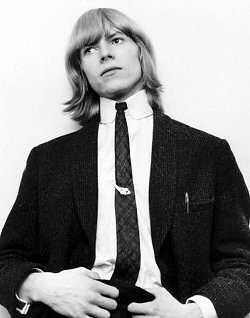
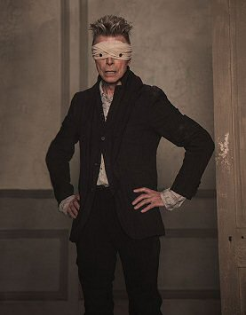

30 DATOS QUE NO CONOCÍAS DE DAVID BOWIE
Se reinventaba continuamente mientras cambiaba el mundo

El legendario músico inglés David Bowie murió apenas días después de lanzar al mercado su último album Blackstar.
El artista británico, que se hizo famoso por su extravagante alter ego: Ziggy Stardust, era considerado como una de las grandes estrellas
de todos los tiempos y ocupa el número 23 de una lista de Rolling Stones de los 100 grandes cantantes.
Infancia
- Su nombre de pila era David Robert Jones. Nació en Brixton, Londres, el 8 de enero de 1947. Su cumpleaños coincide con el de Elvis Presley.
- El guitarrista de Rock Peter Frampton fue el mejor amigo de Bowie en la escuela. Frampton tocó la guitarra junto a Bowie en varias ocasiones durante su carrera.
- Comenzó a tocar el saxofón cuando tenía 12 años.
- Un amigo de la escuela, George Underwood, le dió un puñetazo en un ojo y eso llevó a que tuviera una de sus pupilas permanentemente dilatadas.

Hombre estrella
- A los 17 años, fue entrevistado por un programa de la BBC como fundador de la Sociedad para la Prevención de la Crueldad contra los Hombres de Pelo Largo.
En esa ocasión señaló que "no es nada agradable cuando alguien te llama cariño y cosas así".
- Según el sitio de Rolling Stone, “The Laughing Gnome” es considerada la peor canción de David Bowie y muchos de sus fans opinan lo mismo.
- El primer hit the Bowie en Reino Unido –Space Oddity, de 1969- fue usado por la BBC para la cobertura de la llegada a la Luna.
- El primer single de David Bowie en Estados Unidos fue Fame, coescrita por John Lennon.
- Se cree que Bowie vendió alrededor de 140 millones de albums musicales en toda su carrera.
- En 2004, la revista Rolling Stone lo colocó en el número 39 en la lista de los 100 grandes artistas de todo los tiempos y en el número 23 de los grandes cantantes.

Músico e Interprete
- Bowie apareció como Poncio Pilato en la película de Martin Scorsese "La Última Tentación de Cristo".
- Bowie co-produjo algunas de las mejores canciones del legendario album "Transformer" del cantante estadounidense Lou Reed.
- La canción Move On, del álbum Lodger, es una reescritura de atrás para delante de su otro hit All the Young Dudes.
- Fue el primer artista de renombre en estrenar una canción para descargar a través de internet, lo hizo con «Telling Lies» en 1996 y tuvo alrededor de 300.000 descargas, el tiempo estimado de cada descarga era de 11 minutos.
- No sólo era un gran músico y actor. También fue dibujante, pintor, escultor y escritor. Se dice que la lectura en una de sus más grandes pasiones, que incluso llegaba a leer un libro al día.

Vida personal
- Bowie le tenía fobia al té, ya que de pequeño se quemó con una taza de éste.
- David Bowie tuvo un medio hermano esquizofrénico que se suicidó en 1985. Se inspiró en su hermano para escribir canciones como Aladdin Sane, All The Madmen, The Bewlay Brothers y Jump They Say.
- Rechazó dos títulos: uno como Comandante de la Orden del Imperio Británico y otra título de caballero por su trayectoria musical.
En ambas ocasiones, mencionó que no le veía sentido a ser condecorado con títulos.
- Arcade Fire y TV On The Radio eran dos de las bandas musicales favoritas de bowie en los últimos 10 años.
- El 10 de enero de 2016, dos días después de su 69 cumpleaños y la publicación de Blackstar, murió de un cáncer de hígado en su apartamento de Nueva York. Se le había diagnosticado dieciocho meses antes, pero no lo había hecho público.